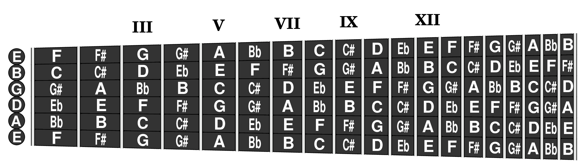
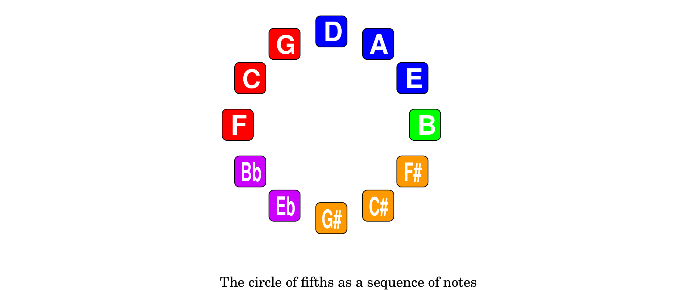
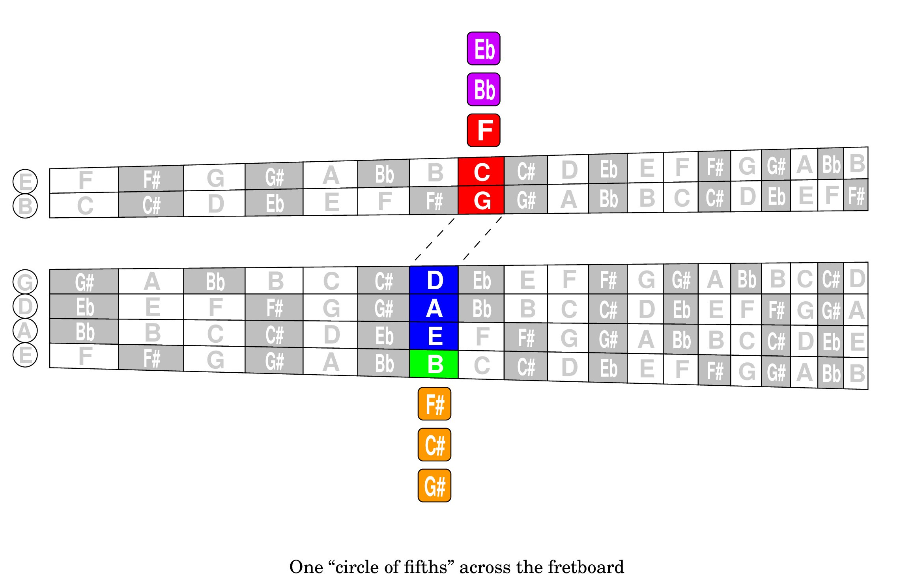
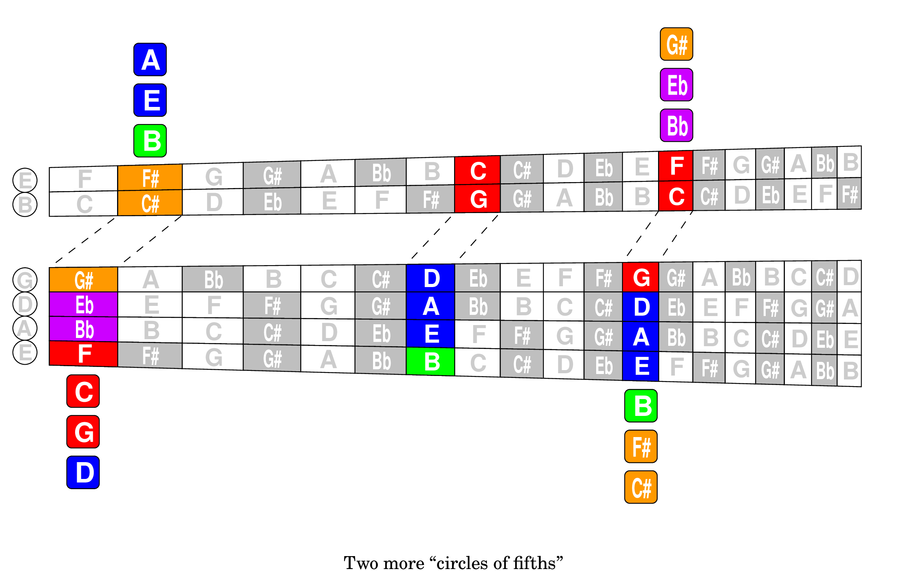
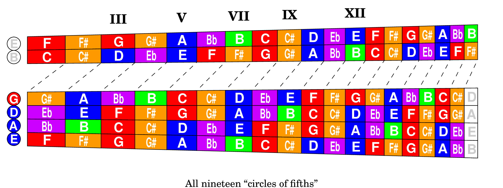
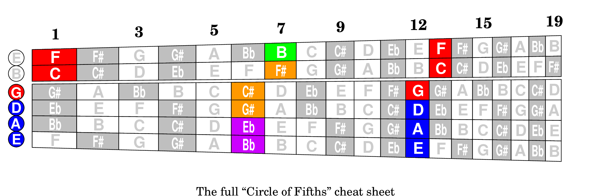
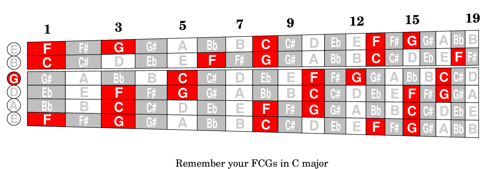
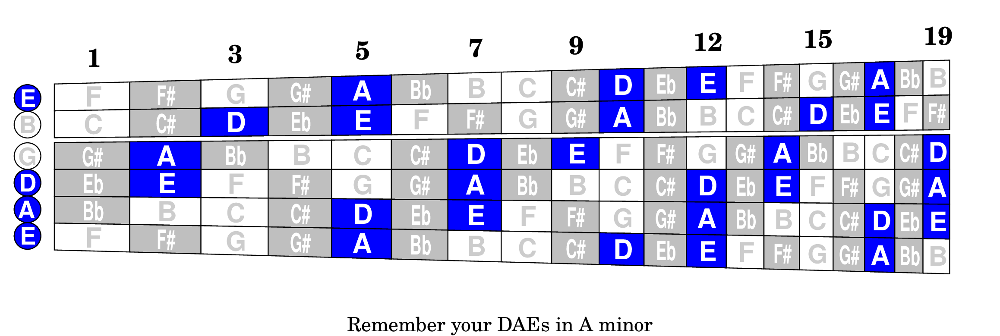

This brings us to the rationale used in coloring the notes on that first page diagram. Unlike purely graphical coloring schemes, e.g. where the colors of the chromatic scale might follow the colors of the rainbow in spectral order, the rationale for this scheme is musical.
Colors are assigned to groups of notes that are related musically by the sounds of their diatonic triads, i.e. major, minor and diminished. Doing it this way turns out to reveal some surprising relationships among notes on the fretboard and their order in the circle of fifths. And understanding these musical patterns will help you see the fretboard in your mind's eye without looking at it.
If you recall the DFE section on “The Notes in Black and White”, playing diatonic music in the key of C is like playing only the white keys of a piano (the “natural” notes). But despite the equal widths of those keys on a keyboard, the musical interval between adjacent notes varies, which makes starting an octave scale at a different point sound different, thus producing the seven “modes” of classical Greek music (C-Ionian, D-Dorian, E-Phrygian, F-Lydian, G-Mixolydian, A-Aeolian and B-Locrian).
Those unequal intervals (some half steps instead of whole steps) also make simple chords sound different when starting at different points in the scale.
For example, a triad (first, third and fifth notes in the sequence) based on C produces a major chord (C-E-G) while a triad starting on D produces a minor chord (D-F-A). The triad at A (A-C-E) is also minor but the triad at B (B-D-F) is unique in being diminished (distinct from minor since the fifth as well as the third are flattened compared to a major triad).
Here are seven diatonic triads in the key of C. They all look alike on the staff, and all are played alike on the piano by simply shifting the hand up the keyboard by one note. Yet they don't sound alike, nor are they played alike on the guitar, where you have to consciously flat the third to make a minor. Play them and listen:
These triad sounds are worth remembering as fundamental consequences of our basic diatonic scale. And they are also the basis for remembering our fretboard coloring scheme.
basic diatonic scale. And they are also the basis for remembering our fretboard coloring scheme.
Because minor triads often feel dark or “bluesy”, we choose the color Blue for the three notes with minor triads:
Because major triads often feel bright, the opposite of bluesy, we choose the color Red for the three notes with major triads:
Because diminished triads often feel unresolved or incomplete, we choose the color Green for the one note with a diminished triad:
Thus, the 7 natural notes occupy the basic “RGB” colors. For the remaining 3 sharps and 2 flats we choose some secondary colors. The sharps, being close to the red notes, are colored Orange:
And flats are purple:
Listing these color tiles in the order of the chromatic scale may look like a random jumble:
But look at what happens when they are listed in the order of rising fifths, like on the circle of fifths:
Like colors are all grouped together, and major (Red) minor (Blue) and diminished (Green) follow in sequence flanked by the flats to the left and the sharps to the right.
Some guitarists may think of the circle of fifths as an old diagram from music theory that tells how many sharps or flats are in each key signature. True, but here the focus is on learning the list of fifths.
At least memorize the seven natural notes in order of fifths: say “FCG” then “DAE” plus “B” (repeat: “FCG” then “DAE” plus “B”, again: “FCG” then “DAE” plus “B”).
Now look for “FCG” and “DAE” on the fretboard below. You should find three FCGs and four DAEs (counting the open strings). But they're not always together, e.g. the “DAF” in tenth position. So what gives?
It will help to see the circle in full color, as in the next diagram. Here, the circle has been rotated a bit to put our favorites on top (repeat: “FCG” then “DAE” plus “B”) with the sharps and flats below. It also names the sharps and flats in the way that's more familiar to guitarists.
But to really see the circle of fifths on the fretboard, you need to split the fretboard visually between the second and third strings (because of their closer tuning) and imagine little “dogleg” lines connecting the two parts with an offset of one fret (to follow a perfect fourth). Then think of our colored circle of fifths as a loop of beads that can be cut and draped across the fretboard, following that little dogleg path. Do you see it now?
If you start at other notes along the first string, you will still trace out notes in the order of the circle of fifths. They will just be different parts of the circle, as shown below:
The same is true no matter where you start on the first string. Every note in the chromatic scale is in the circle of fifths. So the nineteen frets on the first string (for a standard classical guitar) lead to a total of nineteen circles of fifths on the fretboard, as shown below:
When you think of the fretboard this way (with the split and the doglegs) the sequence is always “FCG” then “DAE” plus “B” (repeat: “FCG” then “DAE” plus “B”, again: “FCG” then “DAE” plus “B”). Without exception.
You might ask why the circle of fifths appears on the fretboard considering that a guitar is tuned mostly in fourths, not fifths. There are many equivalent answers, all of which are useful. Because the sequence of ascending fifths is the same as the sequence of descending fourths. Because fourths and fifths are complementary: a fourth plus a fifth equals an octave. Because inverting a fifth produces a fourth, as shown below:
In the first chord, the C and the higher G are a fifth apart (the G is a fifth above the C and the C is a fifth below the G). In the second chord, the C and the lower G are a fourth apart (the G is a fourth below the C and the C is a fourth above the G). If this sounds confusing, it's because the same C is being compared to two different notes named G, an octave apart.
So the circle of fifths (ascending) is also a circle of fourths (descending). Thus, as you descend fourths by going to lower strings on the fretboard (following the doglegs) you always get the same sequence as ascending fifths, i.e. as though you were going clockwise around the circle of fifths.
If you know your fretboard better than your music theory, you can turn this relationship around in case you can't remember the circle of fifths. Our mantra of “FCG” then “DAE” is built right into first position and the open strings, which you surely cannot forget:
Here's an example of using your fretboard to figure out sharps and flats in a particular key. Knowing that the key of C has no sharps or flats, you add sharps as you go down (clockwise around the circle) to the next keys: G, D A and E. Going the other way from C (i.e. up, or counterclockwise) you add flats. So the key of A has three sharps and the key of F has one flat.
Need the other six parts of the circle of fifths? After “FCG” then “DAE” you know that “B” is next (from the mantra). So that set of six is available starting with the B in seventh position. And there's another “FCG” then “DAE” even higher up:
Another reason to know your fourths and fifths, is that nearest neighbors on the circle of fifths get along better with each other (fourths and fifths are more harmonious) than notes that are diametrically opposed (tritones and semitones are more dissonant). So, depending on genre, odds are good that nearest neighbor notes are likely to appear in the same piece.
In the key of C major, for example, the common I-IV-V chords in old rock and roll have roots C-F-G, where F has the role of fourth. Of course, F is also a fifth below C and “FCG” is a group of nearest neighbors on the circle of fifths.
Regardless of all that theorizing, remembering that “FCG” appears together on the fretboard is something your brain can handle while reading music. At least in the case where you're already playing one of those three, you'll know that its friends are nearby. So even if you don't have absolute knowledge of every F, C and G, just having relative knowledge of their proximity can help.
Likewise, in the key of A minor, which also appears a lot in these exercises, the I-IV-V pattern leads to the “DAE” neighbors on the circle of fifths. So knowing that these friends like to congregate may help you in your sight reading.
Of course, you also have to keep in mind whether you're straddling the “split” in the fretboard and compensate accordingly.